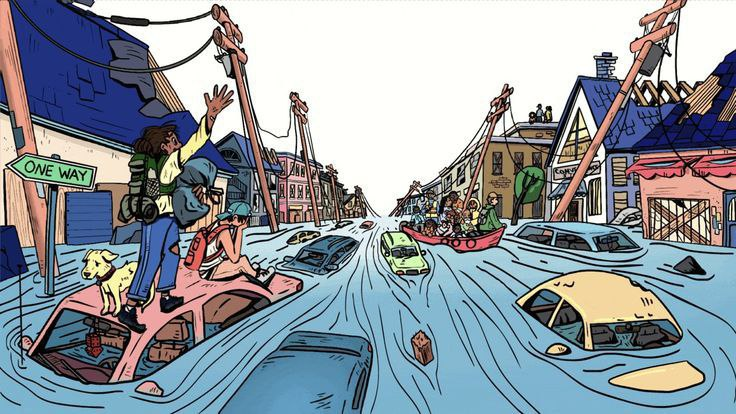
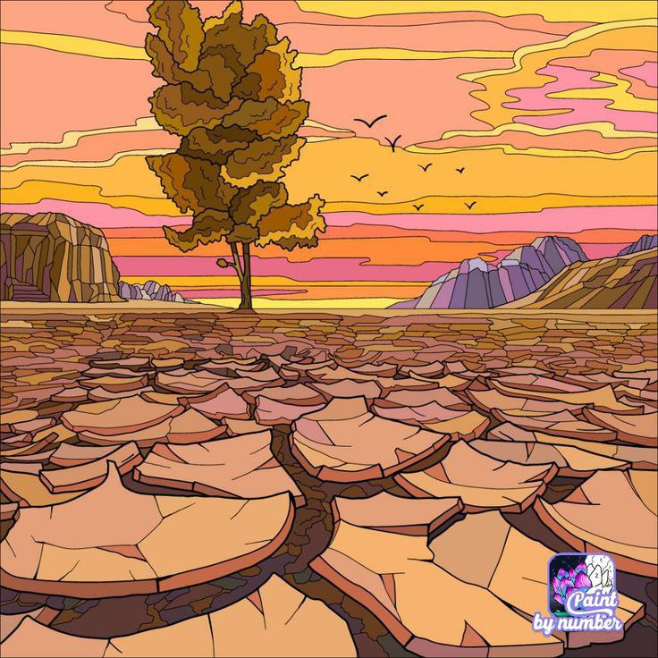

Massive Coastal Flooding
Understand the impacts & how to prepare
Impacts

Severe Infrastructure Damage
Roads, bridges, homes and power lines are destroyed,cutting off transportation and electricity.
High Human Impact
Thousands may face displacement, injury, or death,and communities lose livelihoods such as fishing and farming.

Environmental Degradation
Saltwater intrusion contaminates farmland and freshwater, causing long-term ecological damage.
How to Prepare
Evacuation Planning
Identify safe shelters and establish evacuation routes in advance.
Emergency Supplies
Store food, water, medicine, and backup power sources.
Community Awareness & Training
Educate communities about flood risks and conduct regular drills.